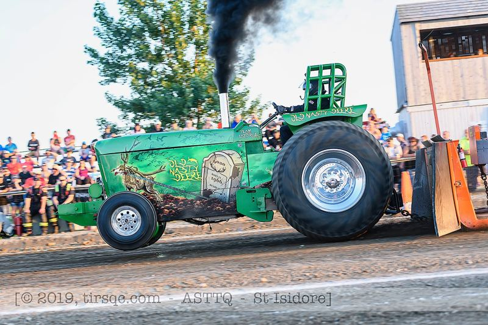
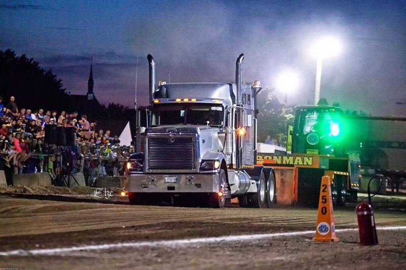

Entrée gratuitedepuis 1983
On se revoit en juillet 2027
Merci d'être venus à la 44e édition. Six jours d'agriculture, de tracteurs et de fête à Saint-Isidore, en Beauce. [Dates 2027 à confirmer]


- Éditions
- 44
- Producteurs fondateurs
- 28
- Bénévoles
- environ 50
- Prix d'entrée
- 0 $
- Tire de tracteurs
- Jugements Holstein
- Beach Party
- Feux d'artifice
- Machinerie agricole
- Chiens de berger
Six jours,
six ambiances
Jugements, tire, spectacles, famille et kiosques : ce qui vous attend chaque été.
-
Jugements d'animaux
Holstein, jeunes éleveurs et relève : la raison d'être de l'Expo depuis 1983.
-
Tire de tracteurs
Super Stock, Pro Farm, 4x4 modifiés et semi-remorques, deux soirs de compétition ASTTQ.
-
Le grand chapiteau
Spectacles chaque soir, Beach Party et feux d'artifice.
-
Place de la famille
Cinéma extérieur, jeux gonflables, maquillage et mascottes.
-
Exposants et machinerie
Concessionnaires, producteurs, artisans et le palais des commerces. Réserver un kiosque pour 2027
-
Agriculture d'aujourd'hui
Agriculture 4.0 et Agri'Culture, avec le Cégep de Lévis.

Notre histoire
« Créée par 28 producteurs visionnaires. »
À l'automne 1982, des producteurs de la Beauce, de Lévis et de Dorchester veulent comparer leur bétail. Ils imaginent un « party agricole » ouvert à tous. Plus de 40 ans plus tard, l'idée tient toujours, grâce aux bénévoles.
Lire l'histoire et nos bâtisseurs- 1983 : Lettres patentes et premier bureau, présidé par Odilon Pelchat
- 1984 : Quatre nouvelles étables
- 1991 : Construction du palais des commerces
- 2010 : Premiers manèges de l'histoire de l'Expo
- 2026 : 44e édition, toujours gratuite
Hors saison, l'Expo travaille aussi
L'hiver,
votre roulotte
dort en dedans.
Remisage intérieur dans les bâtiments de l'Expo pour roulottes, véhicules récréatifs (VR), autos, pick-ups, bateaux, motos et Spyder. Assuré, avec plus de 20 ans d'expérience.